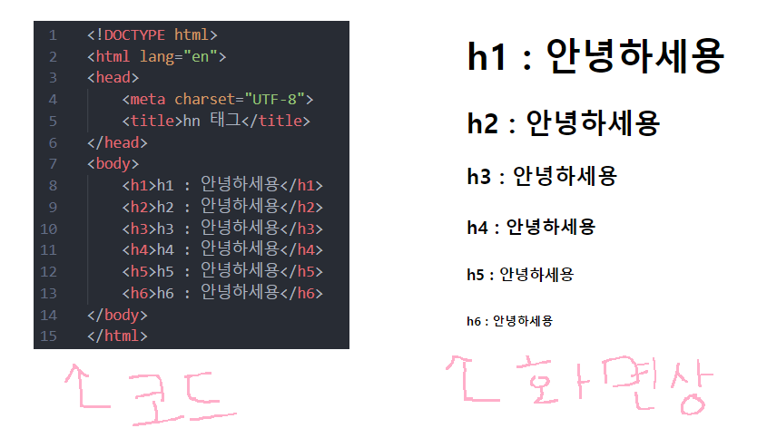
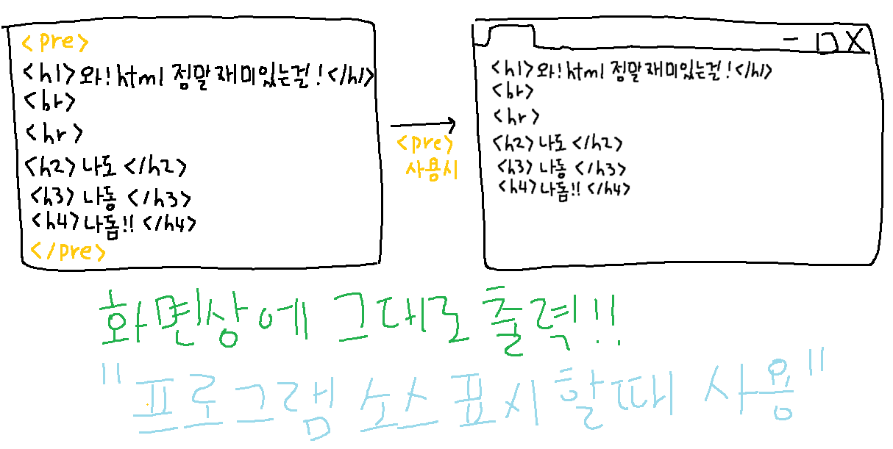

1. <title> 태그
: 웹 페이지의 타이틀 달기 (탭 제목), <head> 안에 적는다
- title 속성
: 페이지 본문에 마우스가 올라 갈 때 설명문이 출력 됨
모든 태그가 가질 수 있는 속성
2. <hn> 태그

- 웹 페이지의 헤드라인
- 페이지의 머리기사의 용도로만 사용
- 검색 엔진의 검색 효율을 높이기 위해 글씨를 굵게 하거나 크게 할 때는 사용 하지 않는다
- <h1>부터 <h6> 까지 있고 숫자가 커질수록 얇아지고 글씨 크기는 작아진다
3. <p> 태그
: 전체 글을 내용에 따라 나눌 때, 하나하나 짧은 이야기 토막
1) </p>로 끝나는 문단 다음에는 자동으로 빈 줄이 추가됨
2) 텍스트 입력 시 주의할 점
- 텍스트는 특별한 태그 없이도 <body> 안에서 표시 할 수 있다
- 하지만 단락을 생성하지 않으면 모든 텍스트가 연결 되어서 하나의 긴 줄로 표시
- HTML 코드에서는 엔터키, 공백 등이 그대로 브라우저에 표현 되지 않는다 !
4. <br> 태그
: 강제 줄 바꿈 태그 (단락 나누는 것과는 다르다)
5. <pre> 태그
: Previously formatted text

- 프로그래머가 입력한 그대로 화면에 표시하는 태그
- 프로그램 소스를 표시 할 때 사용
6. <hr> 태그
: 내용의 전환이 필요한 곳에 수평선
- hr 속성
- align -> left, center, right (정렬)
- width -> 너비
7. 특수 문자
: < , > 와 같은 HTML 언어의 예약어 문자나 기호 등을 화면에 표시하기 위해 사용